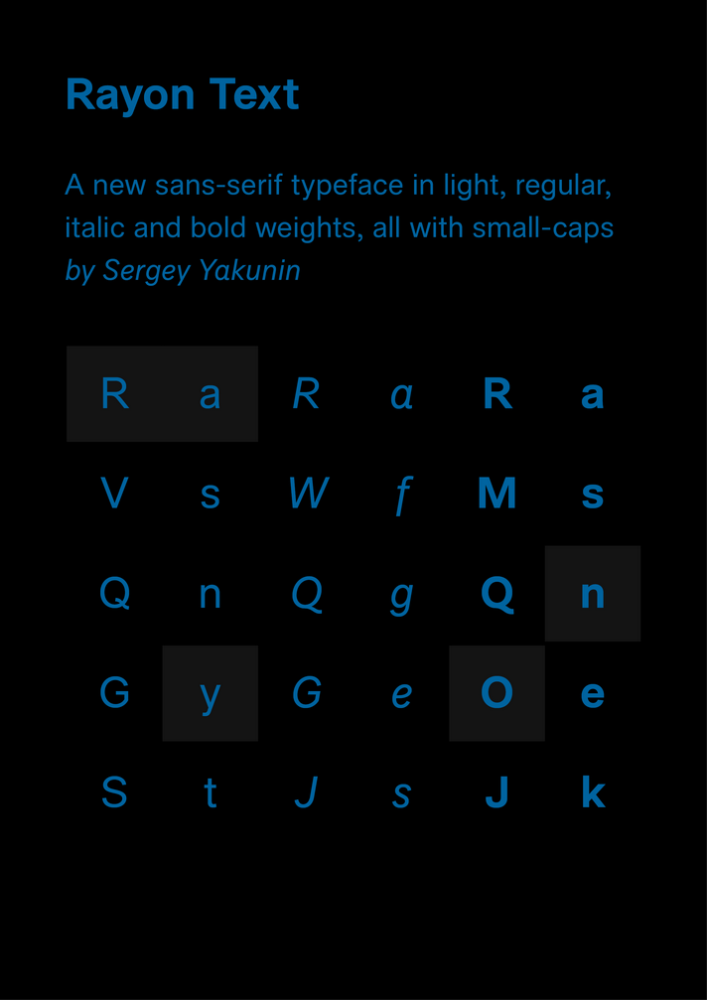
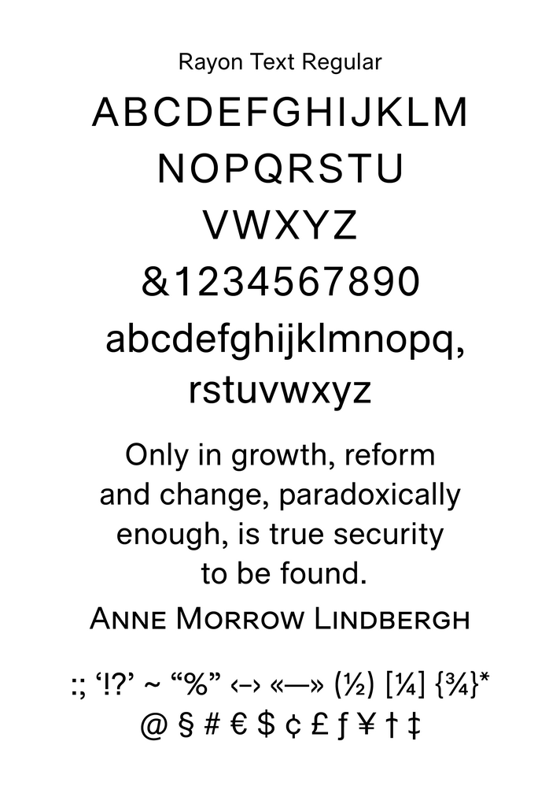
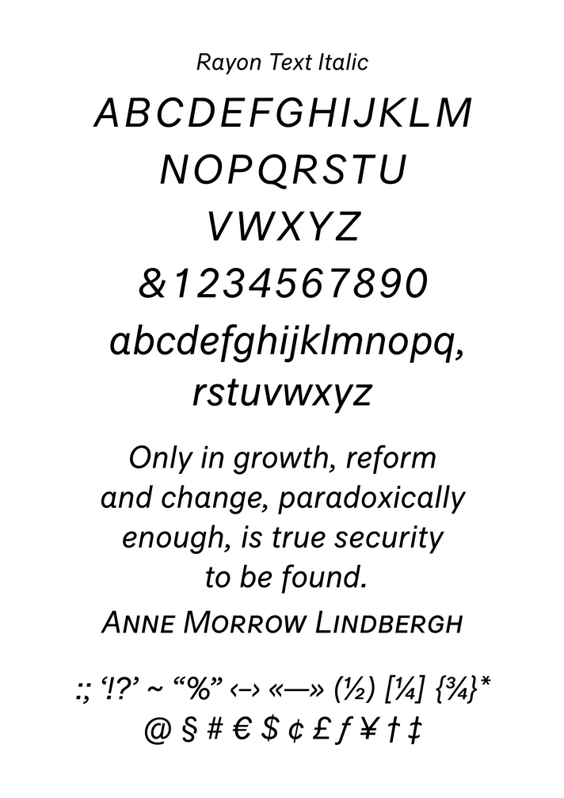
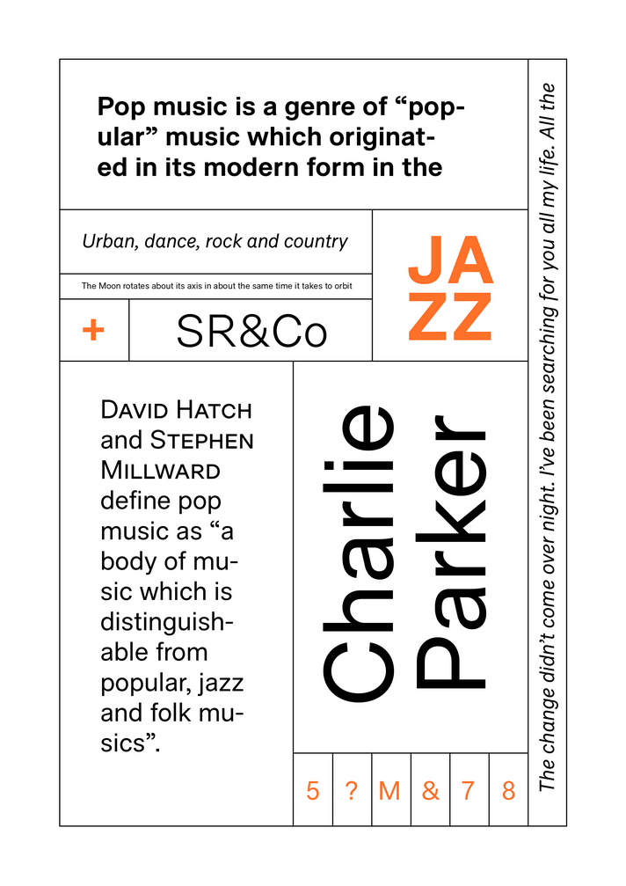
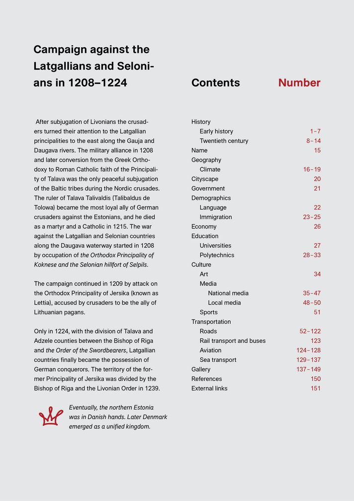
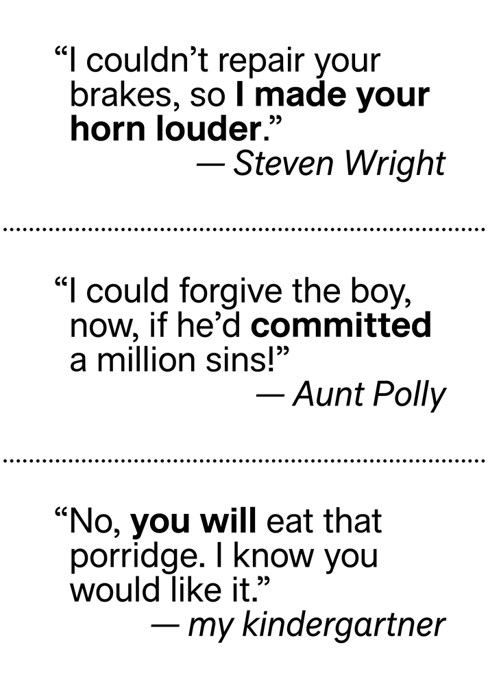
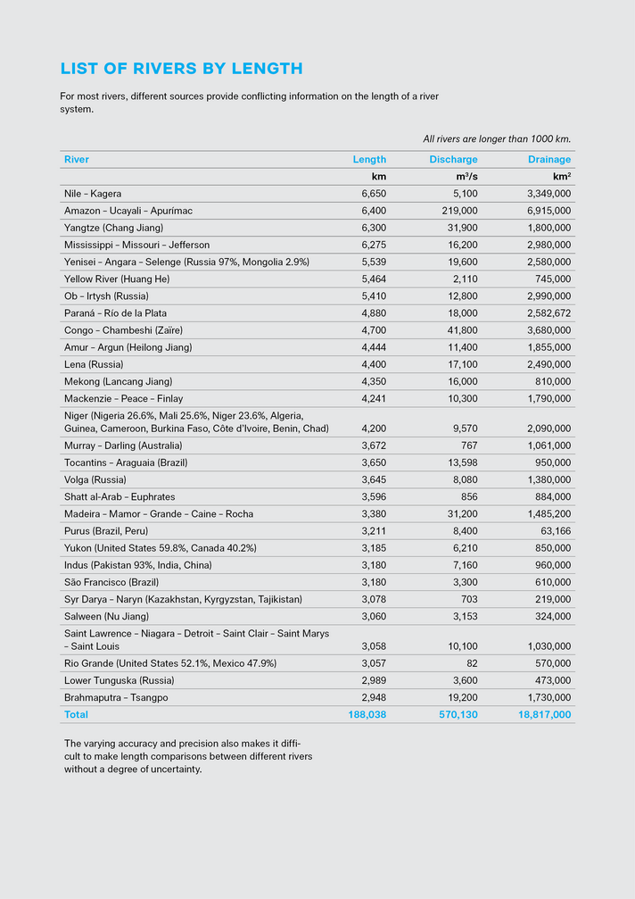
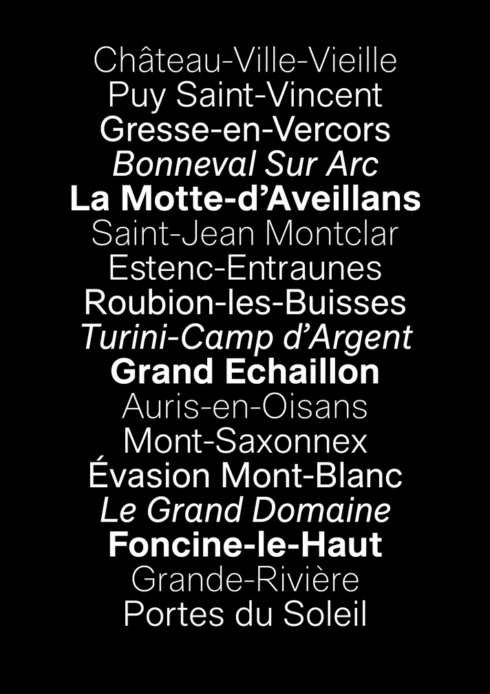

Логотипы
Я делаю логотипы от случая к случаю начиная с 2008 года.


Шрифты
Район Текстовый (Rayon Text)
Много лет я искал шрифт на замену Ариалу, особенно в заголовках. Я решил сделать свою версию. Шрифт Район — гротеск в нескольких начертаниях, с курсивом и капителью. Шрифт годен для заголовков, крупных надписей и логотипов. При разработке я пытался уменьшить эффект «зауженности», от которого страдают многие шрифты, как мне кажется.
По началу шрифт был совсем забавным и «рюшечным». После продолжительного тестирования я решил сделать совсем текстовую версию. В планах — работа над узкими версиями, тонкие и жирные начертания, русские буквы.
- 
-

- 
- 
-

-

- 
- 
- 
-

-

-

- 
-

- 
Хронология разработки:
- Я сделал первые наброски жирного и прямого начертания в Иллюстраторе в январе 2012. Я начал только лишь с нескольких кириллических надписей.
- Затем я перенес всё в Fontlab. Я сделал лишь латинские буквы и цифры, но это был ММ-шрифт в трёх осях — жирность, ширина и контраст.
- После я тщательно исследовал формы и пропорции букв, межбуквенные расстояния — ММ-шрифт нужен был именно для этого. Я сравнивал прямое и жирное начетания с Гельветикой и Ариалом, проводил тесты в Фотошопе, браузерах, офисе. Хинты были сделаны автоматически с помощью ttfautohint, за что большое спасибо Вернеру Лембергу.
- В феврале 2013-го я занялся тонкими, узкими и курсивными версиями.
- В ходе работ я широко использовал ФонтЛаб, ФонтФорж, множество скриптов на Питоне, трутайп-автохинтинг, а также несколько специфичных шрифтовых инструментов (TTX, AFDKO).
Дополнительно:
-
— примеры использования шрифта в ХТМЛ
и ПДФ;
-
— Район Текстовый
на Behance.
Рэнд (Rand)
Шрифт в одном жирном начертании с кириллической частью. Годен для крупных надписей, логотипов. Незаконченная работа.
Падре (Padre)
Незаконченная работа. Этот шрифт «вырос» из одного логотипа, который я разрабатывал. Четыре начертания почти готовы, но трудности возникли с курсивом.
Роща (Roscha)
Незаконченное шрифтовое семейство. Изначально делался как шрифт для упаковки и логотипов.

Грэмм (Gramm)
Плотный шрифт в четырёх начертаниях, предназначенный для использования в вебе. Незаконченная работа, 2008 год.
Несколько русских букв для шрифта Биом дизайнера Карла Кроссгрова
Футуристический нео-гротеск — таких русских шрифтов почти нет, и я решил сделать несколько надписей.

Версия без засечек для шрифта PMN Caecilia Маттиаса Нордзея
В январе 2012 года мне в руки попал Амазон Киндл. Я обнаружил там интересный шрифт, ПМН Цецилия. Я заметил, что русские книги трудно читать — виной тому большое количество крупных засечек. Русские буквы в среднем имеют больше засечек в сравнении с латинскими, в первую очередь из-за таких «прямых» букв как «н», «п», «ы»... Буквы шрифта Цецилия как раз имеют крупные засечки, которые не очень хорошо работают в русских текстах. Довольно скоро я решил устранить этот недостаток — и сделал набросок шрифта совсем без засесечек, Цецилиа Санс.

Приведение в порядок кириллической части шрифта Плейфейр Дисплей дизайнера Клауса Сøренсена
Плейфейр — отличный шрифт, но русские буквы, сделанны иностранцем, слишком вычурны... Исправляем.